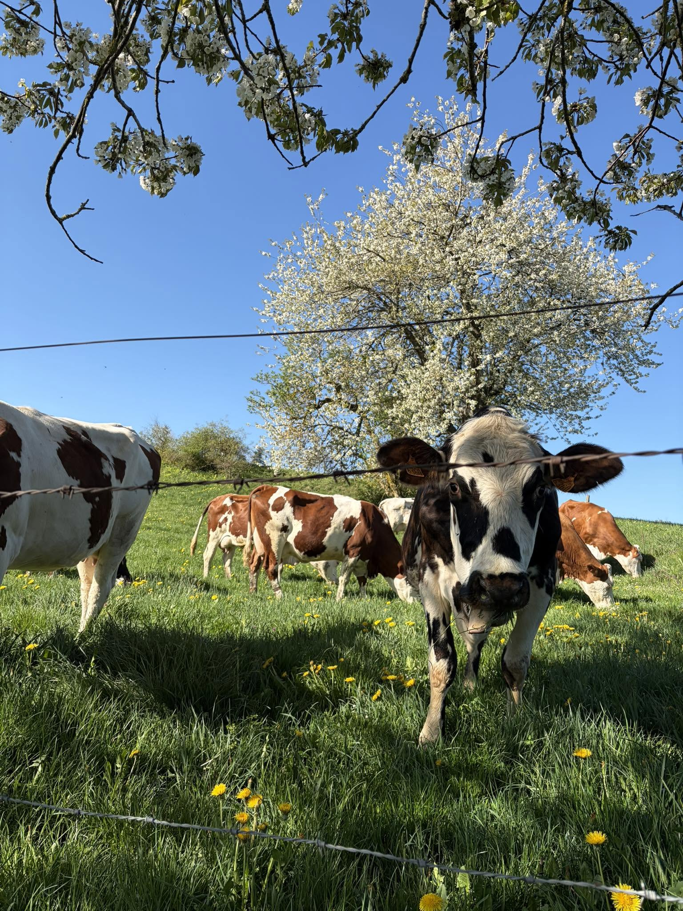

Le Pain Fermier
Brives-Charensac (43)
Nous avons choisi de transformer sur place le lait bio de notre ferme en desserts glacés sincères et généreux.

Notre ferme produit du lait biologique depuis 2011, distribué par Biolait. Avec Les Bio Givrés, nous avons voulu lui donner une nouvelle vie : des glaces, des sorbets et des yaourts fabriqués avec soin à Coulombs.
Venez acheter directement dans notre atelier de production. Paiement en espèces, chèque ou carte bancaire.
Brives-Charensac (43)
Mende (48)
Le Puy-en-Velay (43)
Brives-Charensac (43)